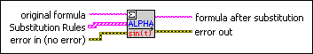

Substitute Variables VI
Owning Palette: Formula Parsing VIs
Requires: Full Development System
Substitutes a formula string by given rules. The rules have a parameter name - parameter content structure.

 Add to the block diagram Add to the block diagram |
 Find on the palette Find on the palette |